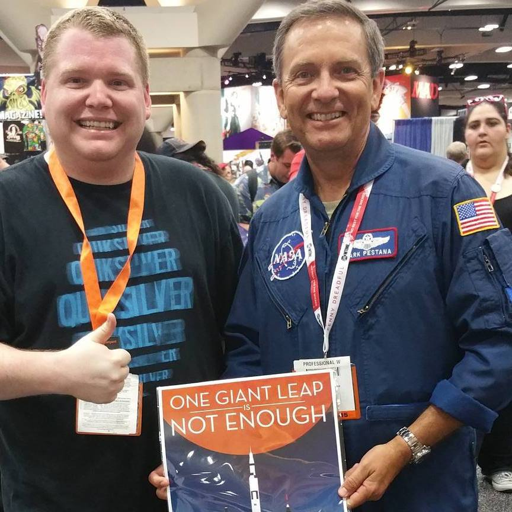

About Me
Hello there! My name is Richard Van Horn.
I've always had a fascination with computers that started at an early age thanks to my dad who was a network engineer. From a young age I was taking apart computers, replacing parts and building them from scratch. I was always curious as a child and remember one instance where I "taught" myself DOS so I could load DOOM as my dad, who usually did it for me was not home and I really wanted to play.
As I got older, my attention and curiosity turned towards the internet and started using Microsoft Frontpage to create basic websites which I thought were pretty awesome at the time. While I didn't have any flaming text on my first website, it did have a rainbow marquee and a gif of a dragon that would fly below the marquee. As time continued on I developed my coding skills and started making more intricate websites and used GeoCities, among other hosts to host and share them with my friends.
I continued with my passion learning new skills and took an intro into web development that was first offered my senior year of highschool. As I continued on I took a couple different coding classes in college but ended up switching my major as I didn't want my passion to become something I hated. After graduating college, I worked in an office as an account manager but always felt out of place and slowly started getting back into coding which made me realize that its what I would rather be doing for a career.
Social